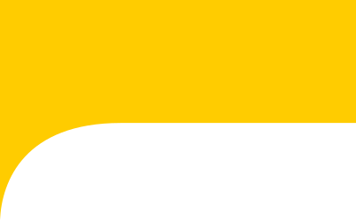
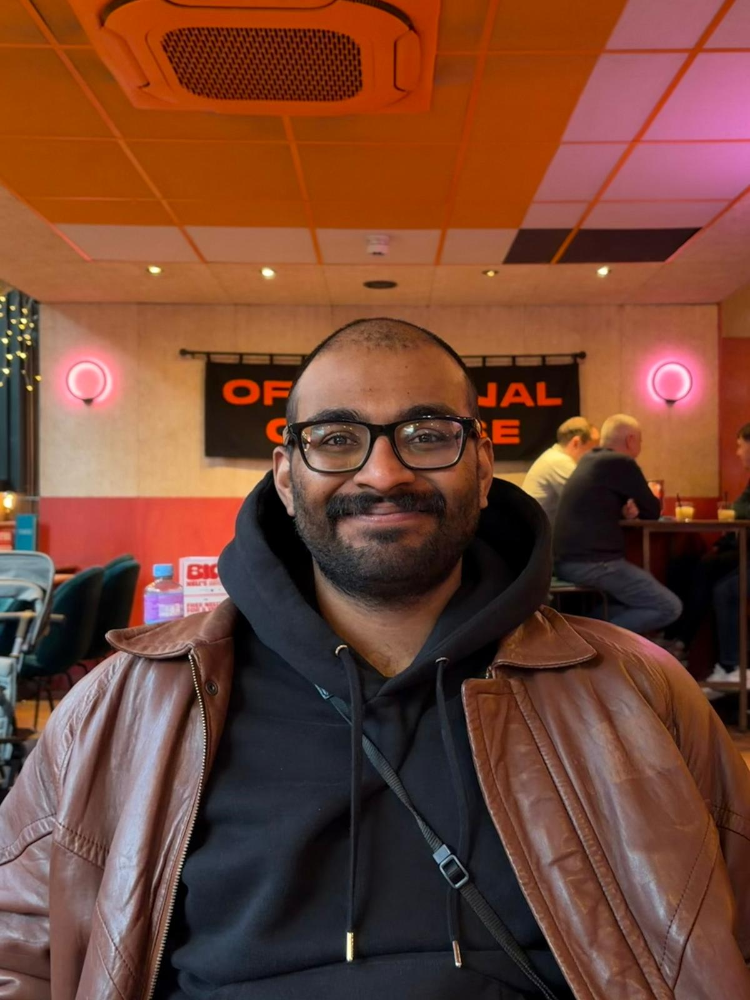

Creative Technologist
Technical Artist
XR Production Manager
AI Workflows Specialist
4+ years experience

I am a Creative Technologist and a Multimedia Artist with 4+ years spanning from real-time 3D production, VR production, AI-assisted content creation, graphic design and Photography. I have led a 15-person team at UCL to deliver a VR cultural preservation experience in UE5. Currently building audio reactive systems, digital twin systems with live data pipelines and computer vision using Python, TouchDesigner and Unreal Engine 5. I also work with microelectronics like Arduino and ESP32 to bring physical sensors and controllers into those visuals.
A custom pipeline exporting photorealistic 4 MB Gaussian Splats from Unreal Engine for real-time web embedding.
Interactive real-time web audio visualizer built with Three.js and GLSL shaders, driven by the Web Audio API.
Robot arm rigged with UE5 IK Control Rig, driven by live hand tracking via MediaPipe and Python over OSC.
Real-time digital twin in UE5 visualising live temperature, occupancy and energy data via a Python backend.
Generative system driven by OSC sensor values with threshold-triggered colour shifts.
Audio-reactive visuals mapping frequency bands to real-time particle and geometry behaviour.
Procedural shaders, material networks and generative geometry in Blender, Unreal Engine, Houdini and Substance.